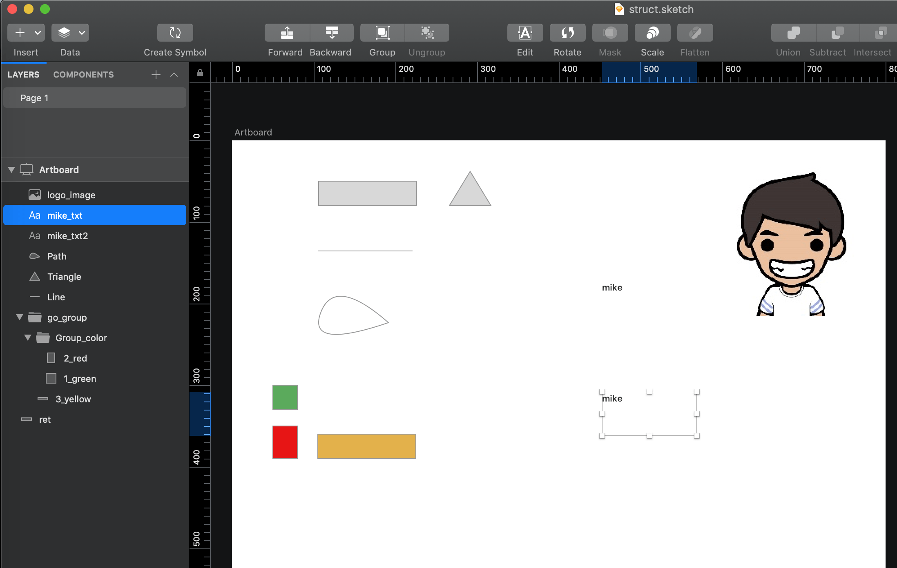
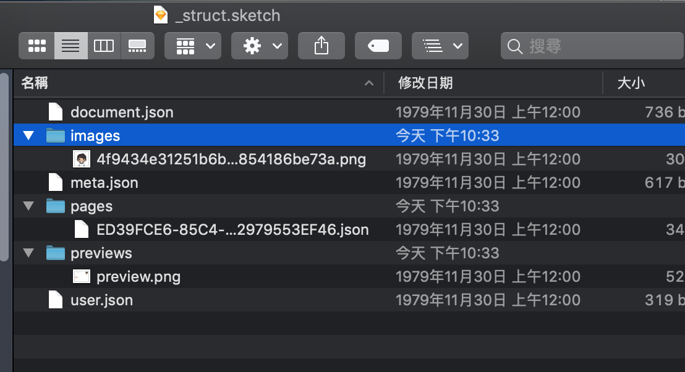

[作品筆記] sketch-builder 雲端原型工具開發筆記(02) - sketch資料結構分析
sketch資料檔案分析
近年來一些side project上非常頻繁使用mac上才有的 sketch的編輯器，漸漸變成自己塑模prototype的主要工具。優點有很多，一是相關套件很多方便討論，二是容易上手。相信不少設計為主的相關從業人員使用sketch上都有不錯的回饋。基本上使用sketch大概是現今UX主流的工具之一。
也因為從去年中開始，在工作專案上遇到不少問題，不容易操作的圖像與工控對於新技術較為保守，也不容易與設計人員有共鳴的討論。因此想在空閒的假日時間，開發一個類似 sketch的雲端原型工具 sketch-builder。
所以接下來會有一系列的開發文，主要還是技術傳道與資料結構的想法記錄為主。
也一併將這幾年的所學內化，開發成一個找到好方向就能推出的專案產品。
之後會陸續紀錄在
sketch-builder 雲端原型工具:
https://mike-zheng.github.io/sketch-builder
sketch 資料解析
進行之前我們來解析一下sketch的資料結構，
並做以之後開發的一個參考。
1. 建立 sketch建立
簡單完成一個這樣子有不同種類的物件與群組的sketch檔案
先開啟sketch建立一個些結構如

- 文字
- 圖片
- 圖形 (圓形 三角形 線 矩形)
- 群組 與群組中群組
2. 解析.sketch檔案
拆開.sketch檔案後可以得到檔案如下

- 📁 images
- 📁 pages
- 📁 previews
- 🗄️ document.json
- 🗄️ meta.json
- 🗄️ user.json
3.images & previews & pages 資料夾
images 與previews裡面只有圖片
分別是
📁 images -> 專案用到的額外圖片資源檔案
- 例如我加入一張圖片進去
📁 previews 裡面是我的page的縮圖
📁 pages 裡面有其他檔名為UUID的json檔案
- 有幾個pages就會有幾個檔案他會被記錄在
user.json,meta.json
- 有幾個pages就會有幾個檔案他會被記錄在
將檔案打開後
4. user.json
user.json
{
"document":
{
"pageListHeight": 85,
"pageListCollapsed": 0
},
"與pages資料夾內的檔案同名的ID":
{
"scrollOrigin": "{62, 54}",
"zoomValue": 1
}
...
}
基本上打開user裡面紀錄的都是跟使用者針對軟體的設定有關係，
其中一些設定跟docment.jons設定又有點像，
但主要都是針對用戶操作卻與專案無關的部分。
5. document.json
而document是這樣紀錄
document.json
{
"_class": "document",
"do_objectID": "....",
"colorSpace": 0,
"currentPageIndex": 0,
"assets": {...},
"foreignLayerStyles": [],
"foreignSymbols": [],
"foreignTextStyles": [],
"layerStyles": {...},
"layerSymbols": {...},
"layerTextStyles": {...},
"pages": [...],
....
}
document 主要是紀錄整個專案裡面用到的全域紀錄區，
例如symbols，sketch常用的module組件，
或是pages列表，就像是整個workspace的紀錄區。
6. meta.json
meta.json
{
"commit": "......",
"pagesAndArtboards":
{
"....UUID":
{
"name": "Page 1",
"artboards":
{
"....UUID":
{
"name": "Artboard"
}
}
}
},
"version": 121,
"fonts": ["PingFangTC-Semibold"],
"compatibilityVersion": 99,
"app": "com.bohemiancoding.sketch3",
"autosaved": 0,
"variant": "NONAPPSTORE",
"created": {...},
"saveHistory": ["...."],
"appVersion": "....",
"build": ...
}
meta.json 就比較像是版本資訊，因為整體的sketch功能因為版本不停地推進，因此紀錄於此。
不過比較意外的是這邊紀錄了pagesAndArtboards，
並且它的結構是KEY VALUE並不是我習慣使用的Array Object
{
page: [
{
'type':'artboards',
'name':'Artboard'
}...
]
}
7. pages
主程式經由document.json, meta.json, user.json 將資料夾pages裡面命名為UUID的json檔案讀進來。
裡面就會是我主要的重點了，其Json file儲存整個sketch核心的畫布資料。
與檔案同名的UUID.json
第一層 page Object 結構
{
"_class": "page",
"do_objectID": "與檔案同名UUID" ,
... // 一堆繁瑣項目
"isLocked": false,
"isVisible": true,
"rotation": 0,
"name": "Page 1",
... // 一堆繁瑣項目
"frame": //整體框 的xywh
{
"_class": "rect",
"constrainProportions": false,
"height": 0,
"width": 0,
"x": 0,
"y": 0
},
...
"style": //page 的 style 設定項
{
"_class": "style",
"do_objectID": "...",
"endMarkerType": 0,
"miterLimit": 10,
"startMarkerType": 0,
"windingRule": 1,
"blur": {},
"borderOptions": {},
"borders": [],
"colorControls": {},
"contextSettings": {},
"fills": [],
"innerShadows": [],
"shadows": []
},
... // 一堆繁瑣項目
"layers": [....],
"horizontalRulerData": {}, // 尺規對齊線的操作存檔
"verticalRulerData": {}, // 尺規對齊線的操作存檔
}
上方節錄了root Object page的資料結構，
其中layers 裡面的樹形結構龐大，我就暫不收錄。
而layer 節點內的表示法為
分為兩種 folder型態的與 item型態的。
folder 型態:
目前觀察到的是_class 為
- artboard
- group
並且擁有
- “layers”: []
{
"_class": "group", // artboard
"name": "group...",
"layers": []
}
item型態節點
- 目前觀察到的是_class 為
- rectangle
- shapePath
- triangle
- text
- bitmap
{
"_class": "rectangle", // rectangle shapePath triangle text bitmap
"name": "rectangle"
}
8. 小結
經過簡單的拆包觀察，對於sketch的檔案結構有更深入的了解，
其中也觀察到一些有趣的地方
- rotation 沒有寫進去frame裡面
- 對於artboard來說自己也是rect
- style只記錄跟風格有關的東西
- 裡面還記錄了一堆感覺操作app也不知道會在哪的東西
- group屬性裡面的位置邏輯很特別，子節點的xywh是相對於父group的
陸續更新:
sketch-builder 雲端原型工具:
https://mike-zheng.github.io/sketch-builder
雲端原型工具開發筆記系列文